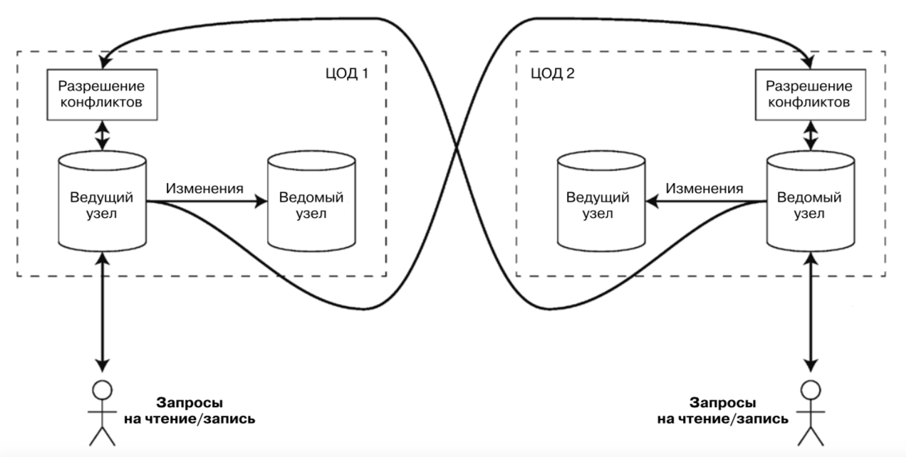

ORM, миграции, репликации, шардинг
Теоретическая часть
- ORM;
- Миграции;
- Репликация;
- Шардирование.
Практическая часть
- Создание классов для работы с ORM;
- Написание менеджера и миграций.
Object-Relational Mapping (ORM)
Классы
- Классы определяют сущность;
- Классы содержат данные и методы;
- Классы могут наследовать данные и методы др. классов;
- В качестве данных классы могут содержать экземпляры других классов, в том числе и списков.
Базы данных
- Основным элементом является таблица;
- Таблицы содержат простые типы данных;
- Данные могут содержать массивы и списки;
- Таблицы могут быть связаны внешними ключами.
Объектно-реляционное отображение
Прослойка между БД и кодом, которая позволяет записывать/читать данные из БД в виде объектов.
- Позволяет приложениям БД работать с объектами вместо таблиц или SQL;
- Операции выполняются над объектами, а потом прозрачно транслируются в команды БД при помощи ORM;
ORM и Flask
SQLAlchemy — это программное обеспечение с открытым исходным кодом для работы с базами данных при помощи языка SQL.
- Реализует технологию программирования ORM;
- Позволяет описывать структуры БД и способы взаимодействия с ними прямо на языке Python;
ORM и Flask
Устанавливаем
- SQLALCHEMY_DATABASE_URI - путь/URI базы данных, который будет использоваться для подключения;
Создание модели
- Создали новую модель Member, унаследованную от db.Model;
- Далее определяем поля при помощи db.Column;
- db.Column принимает название колонки, тип.
Создание модели. One-to-Many
- Вместо db.Column делаем db.relationship;
backref -- объявили, что у Address будет поле person;lazy определяет, когда SQLAlchemy загружит данные из БД.
lazy
Существует несколько типов, чему может быть равно lazy:
'select'/True; Загрузит данные, используя select;'joined'/False; Загрузит данные, используя join;'subquery'; То же, что и joined, но использует подзапрос;'dynamic'; Будет полезно, если в дальнейшем захотите применить дополнительные фильтры;
Создание модели. Many-to-Many
- Нужно использовать вспомогательную таблицу для реализации Many-to-Many;
Flask-Migrate
pip install Flask-Migrate
- Alembic поддерживает репозиторий миграции, который является каталогом, в котором хранится его сценарии миграции;
- Генерирует скрипт перехода между предыдущим состоянием и следущим;
- Папку migrations нужно добавить в систему контроля версий;
- Скрипты "перехода" между состояниями хранятся в migrations/versions.
С чего начать?
Можно попробовать так...
... но в таком случае придётся делать отдельно.
Flask-Script - расширение, предоставляющее поддержку для написания внешних скриптов.
Определение репликации
Репликация (replication) - хранение копий одних и тех же данных на нескольких машинах.
Причины репликации данных:
- ради хранения данных географически близко к пользователям (и сокращения, таким образом, задержек);
- чтобы система могла продолжать работать при отказе некоторых ее частей (и повышения, таким образом, доступности);
- для горизонтального масштабирования количества машин, обслуживающих запросы на чтение (и повышения, таким образом, пропускной способности по чтению).
Виды репликации
Если реплицируемые данные не меняются с течением времени, то репликация не представляет сложности: просто нужно однократно скопировать их на каждый узел и всё.
Основные сложности репликации заключаются в том, что делать с изменениями реплицированных данных.
- С одним ведущим узлом (single-leader);
- С несколькими ведущими узлами (multi-leader);
- Без ведущего узла (leaderless).
С одним ведущим узлом (single-leader)

С несколькими ведущими узлами

Виды репликации
- Производительность.
- Устойчивость к перебоям в обслуживании ЦОДов
- Устойчивость к проблемам с сетью
Без ведущего узла (leaderless)
Клиенты отправляют информацию о каждой из операций записи одному из нескольких узлов и читают из нескольких узлов па- раллельно, чтобы обнаружить узлы с устаревшими данными и внести поправки.
Что это такое?
В случае очень больших наборов данных или объёмов обрабатываемой информации репликаций недостаточно: необходимо разбить данные на секции (partitions), иначе говоря, выполнить шардинг (sharding) данных.
Секционирование (partitioning), представляет собой способ умышленного разбиения большого набора данных на меньшие.
Когда нужно применять шардирование?
- Когда функциональное разбиение и репликация не помогают;
- Разбиваем данные на маленькие кусочки и храним на многих серверах;
- “Единственное” решение для крупного масштаба;
- Нужно аккуратное планирование.
Подходы к секционированию
- Секционирование по диапазонам значений ключа (ключи сортируются и секция содержит все ключи, начиная с определенного минимума до определенного максимума);
- Хеш-секционирование (вычисляется хеш-функция каждого ключа и к каждой секции относится определенный диапазон хешей);
- “Единственное” решение для крупного масштаба;
- Нужно аккуратное планирование.
Домашнее задание
- Переписать БД из первого семестра на модели (4 балла)
- Сделать миграцию и закоммитить её (2 балла);
- Переписать методы, пищущие в БД, с использование ORM (4 балла);
Срок сдачи: следующее занятие.